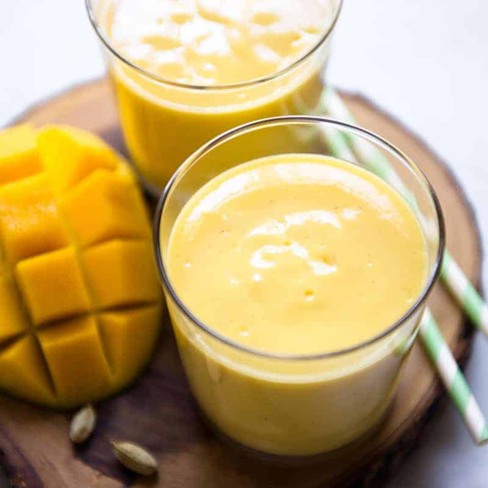

Mango Lassi

Many famous texts speak of a nectar of the gods known as Ichor. Maybe they would move on if they just tried this instead.
Ingredients
- 2 (15.25 ounce) cans mango pulp, or mango slices with juice
- 1/2 cup plain yogurt
- 1/4 cup milk
- 2 cups ice cubes
Steps
- Blend mango pulp, yogurt, milk, and ice in a blender until smooth
- Pour into tall glasses and serve.